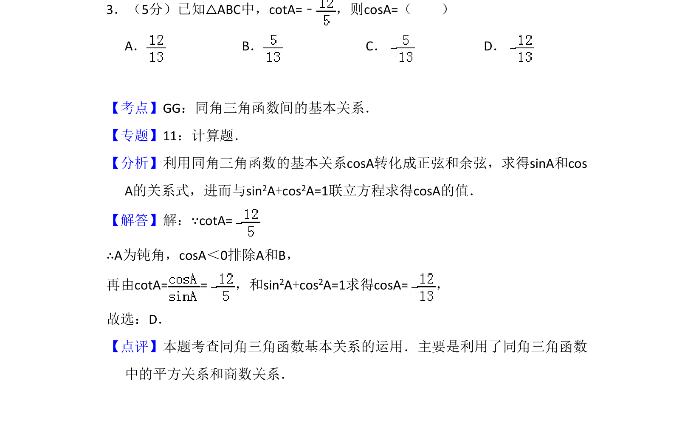
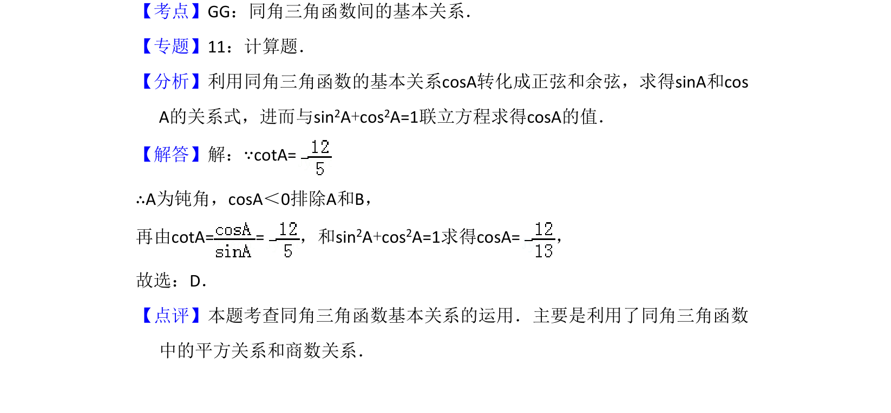

考点：同角三角函数关系 平方关系 商数关系

已知cotA的值求cosA，运用同角三角函数基本关系及平方关系求解。

📄 原 PDF 第 2 页：
素材/真题/吉林/2008-2024·（吉林）数学高考真题/2009年高考数学试卷（理）（全国卷Ⅱ）（解析卷）.pdf
3．（5分）已知△ABC中，cotA=﹣ ，则cosA=（ ） A．B．C．D．
【考点】GG：同角三角函数间的基本关系．菁优网版权所有 【专题】11：计算题． 【分析】利用同角三角函数的基本关系cosA转化成正弦和余弦，求得sinA和cos A的关系式，进而与sin2A+cos2A=1联立方程求得cosA的值． 【解答】解：∵cotA= ∴A为钝角，cosA＜0排除A和B， 再由cotA= =，和sin 2A+cos2A=1求得cosA=， 故选：D． 【点评】本题考查同角三角函数基本关系的运用．主要是利用了同角三角函数 中的平方关系和商数关系．